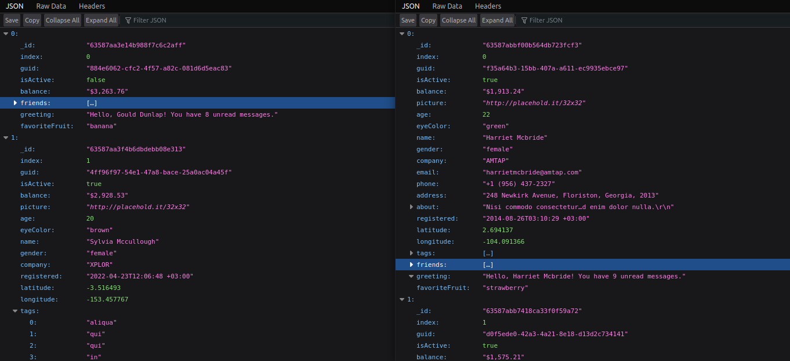
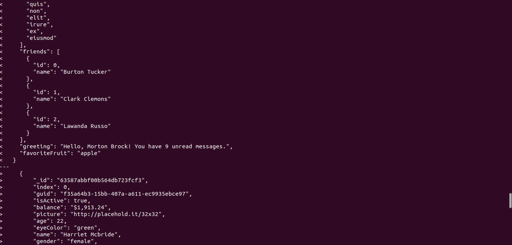
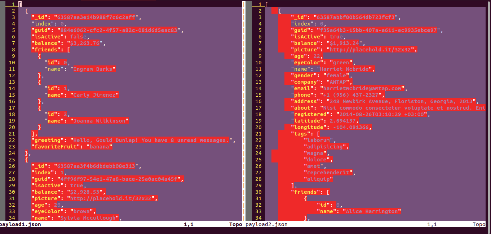
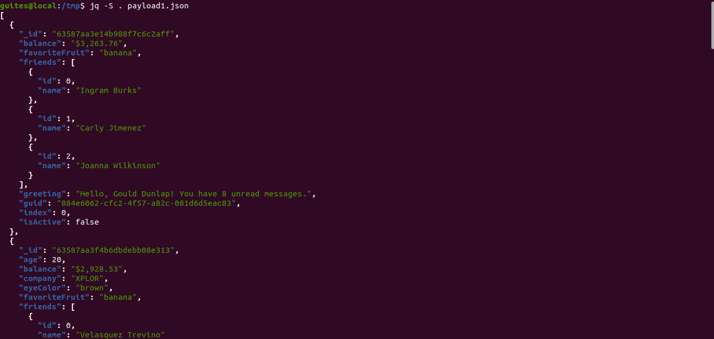
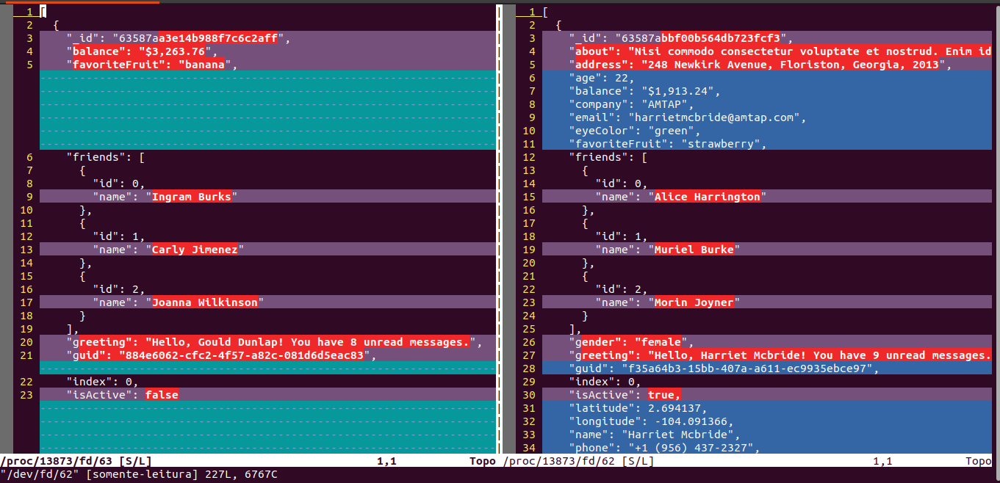
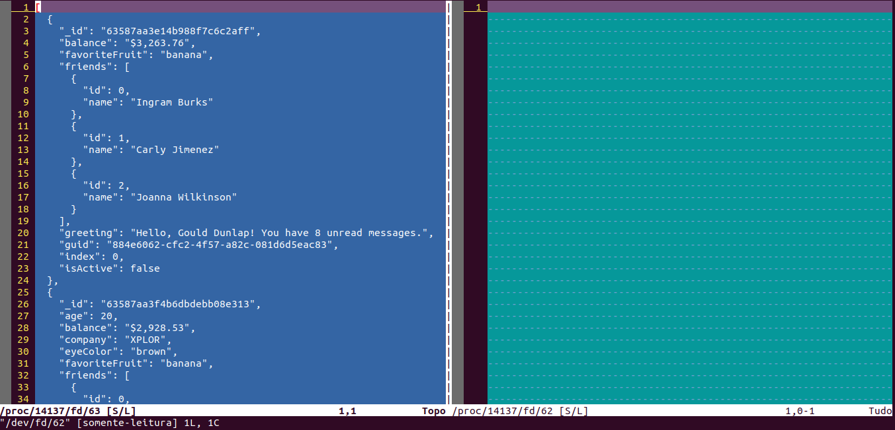

Comparando json na linha de comando
mg;nl: vamos usar o vimdiff e o jq para comparar arquivos json independente da formatação.
Comparar arquivos json parecidos pode ser complicado. Muitas vezes os arquivos foram formatados com espaçamentos diferentes, ou a diferença não ocorre no mesmo nível hierarquico.
Vamos criar um script simples pra comparar arquivos json diretamente pelo terminal, usando o programa jq e o vimdiff.
Vamos ver também como preparar um script bash pra lidar com erros conhecidos, como arquivos com json inválido ou de outro formato.
Payloads de exemplo
Vamos testar a comparação de dois arquivos json, payload1.json e payload2.json.
Comparando no olho
Você pode fazer do jeito manual, abrindo seus arquivos e comparando no olho:
# substitua firefox pelo seu visualizador/editor favorito
firefox payload1.json payload2.json

Logo de cara, algumas dúvidas surgem: quais chaves o primeiro arquivo tem, que o segundo não? Em quais índices do array?
Vamos utilizar um programa mais propício.
Programas de comparação de texto
Que tal usar o diff?
diff payload1.json payload2.json

Opa, parece que todas as linhas são diferentes?
Vamos investigar com vimdiff
vimdiff payload1.json payload2.json

Ah é, o espaçamento é diferente nos dois arquivos...
Ajustando a formatação
Vamos utilizar o jq, um utilitário que permite manipular arquivos json pela linha de comandos.
sudo apt-get install jq
Ele tem uma opção que resolve o problema das chaves faltantes, -S ou --sort-keys, que ordena as propriedades de todos os objetos.
jq -S . payload1.json

Repare que ele também ajusta os espaçamentos.
Juntando tudo em jsondiff
Vamos criar uma função que une a formatação de jq com a comparação de vimdiff, usando a substituição de comandos do bash.
vimdiff <(jq -S . payload1.json) <(jq -S . payload2.json)

Bem melhor!
Podemos generalizar o comando em uma função. Você pode adicioná-la diretamente no seu arquivo ~/.bash_aliases.
function jsondiff() {
vimdiff <(jq -S . $1) <(jq -S . $2)
}
alias ,jsondiff=jsondiff
Onde $1 e $2 fazem referência ao primeiro e segundo argumentos passados na função, respectivamente.
Depois de editar o ~/.bash_aliases, lembre de rodar
source ~/.bash_aliases
Pra alteração surtir efeito na sessão atual.
Você pode chamar a nova função com
,jsondiff payload1.json payload2.json
Evitando erros em jsondiff
No formato atual, caso você passe como argumento um arquivo com json inválido (ou arquivo de outro formato), erros estranhos podem ocorrer.
Salve o json abaixo num arquivo chamado invalid.json:
[
{
"_id": "63587aa3e14b988f7c6c2aff",
"index": 0,
"guid": "884e6062-cfc2-4f57-a82c-081d6d5eac83",
"isActive": false,
}
]
E tente utilizá-lo como parâmetro no jsondiff
,jsondiff payload1.json invalid.json

Repare que a tela da direita está vazia.
Se você tentar utilizar o jq diretamente no invalid.json,
jq -S . invalid.json
Vai ver o seguinte output:
parse error: Expected another key-value pair at line 7, column 3
Por sorte, o jq respeita a tradição unix de reservar o código de saída 0 para programas que rodarem com sucesso.
Um código de saída diferente de 0, portanto, indica que ocorreu um erro. No nosso caso, qualquer tipo de erro deve impedir que o programa prossiga.
Vamos criar um teste, que vai ser rodado antes da lógica do jsondiff.
Primeiro, rodamos o jq:
jq . invalid.json >/dev/null 2>&1
Depois, verificamos o código de saída, utilizando a variável reservada $?. Experimenta printá-la:
jq . invalid.json >/dev/null 2>&1
echo $?
Verifique um output no formato abaixo:
guites@local:/tmp$ jq -S . invalid.json
parse error: Expected another key-value pair at line 7, column 3
guites@local:/tmp$ echo $?
4 # <!-- código de erro diferente de 0 !
Vamos colocar esse teste num bloco if else:
if ! jq . $1 >/dev/null 2>&1; then
echo "$1 contains invalid json data."
fi
Podemos encapsular esse teste em uma função separada
function validatejson() {
if ! jq . $1 >/dev/null 2>&1; then
echo "$1 contains invalid json data."
return 1
fi
return 0
}
jsondiff à prova de erros
Utilizando a verificação, vamos adaptar nosso método principal, o jsondiff, diretamente no arquivo ~/.bash_aliases
function validatejson() {
if ! jq . $1 >/dev/null 2>&1; then
echo "$1 contains invalid json data."
return 1
fi
return 0
}
function jsondiff() {
validatejson $1 || return 1
validatejson $2 || return 1
vimdiff <(jq -S . $1) <(jq -S . $2)
}
alias ,jsondiff=jsondiff
Caso o arquivo json passado de argumento seja inválido, o método validatejson() vai retornar 1, que é considerado um valor falso, e caímos no lado direito dos operadores OR (||) utilizados nas duas primeiras linhas da função jsondiff.
O return 1 cumpre dois objetivos: finaliza a função antes de entrarmos na parte principal, e define o código de saída, para mantermos o padrão unix.
Vamos testar:
,jsondiff payload1.json invalid.json
echo $?
Verifique o output no formato:
guites@local:/tmp$ ,jsondiff payload1.json invalid.json
invalid.json contains invalid json data.
guites@local:/tmp$ echo $?
1
Abraço!
Referências
- https://stackoverflow.com/a/46955018/14427854
- https://stackoverflow.com/a/37175540/14427854
- https://www.jsondiff.com/